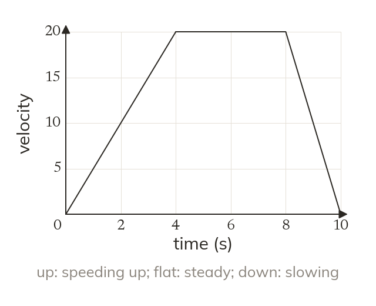
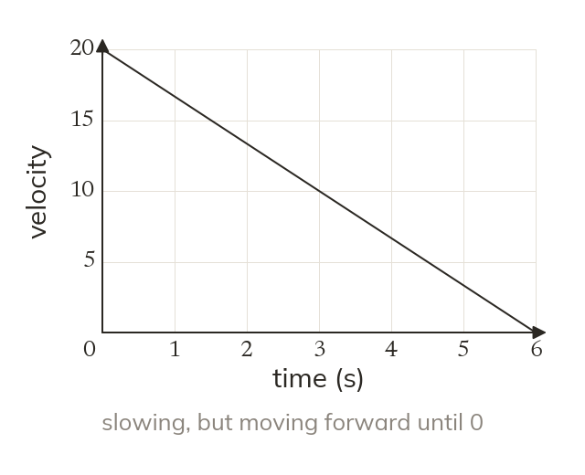
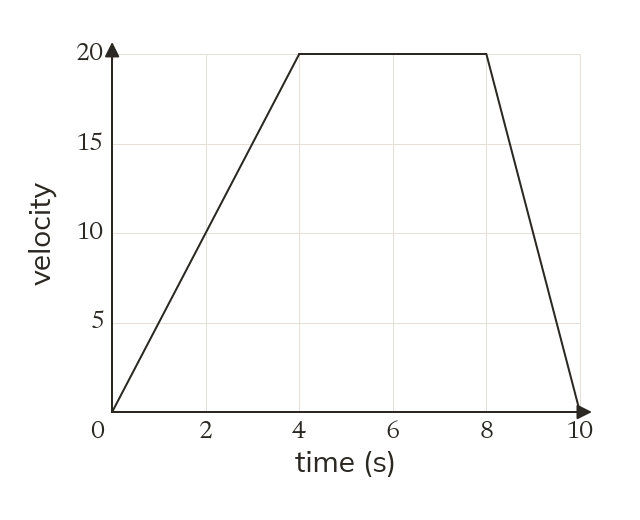
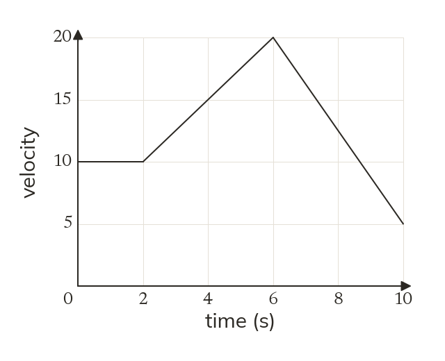
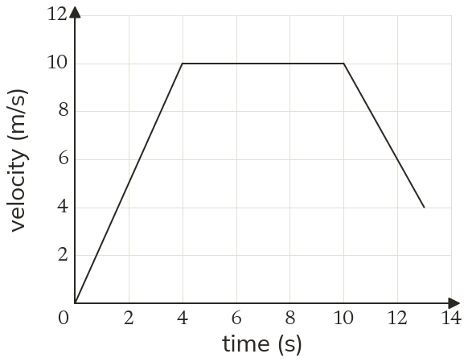
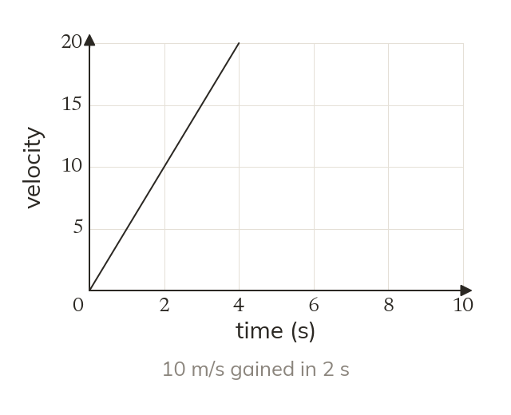
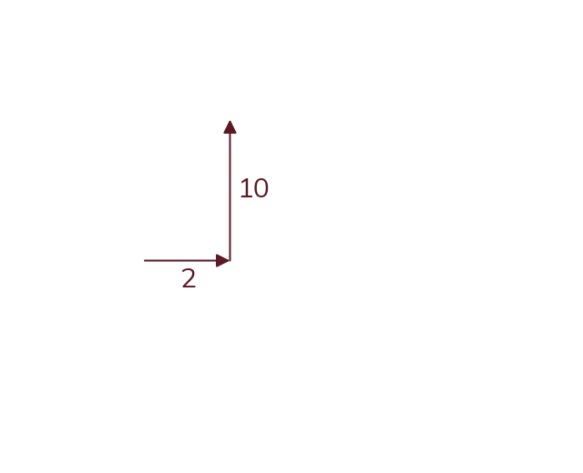
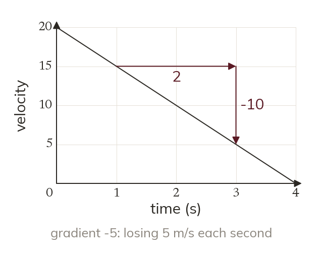
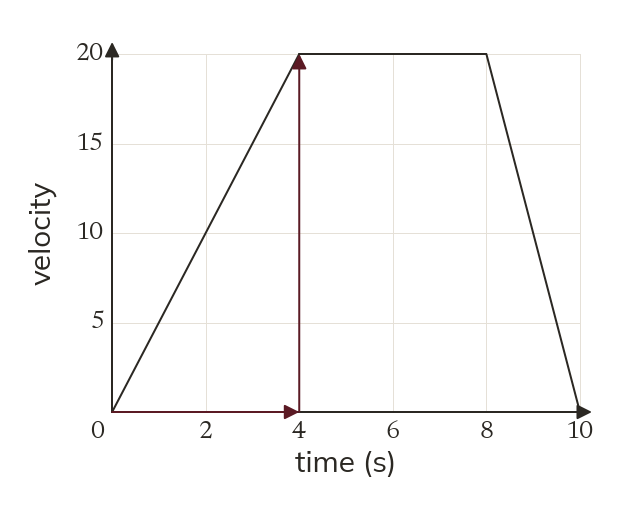
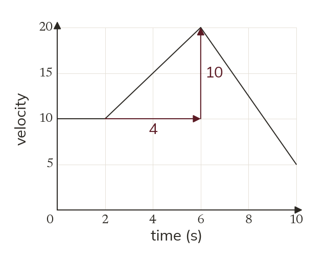

A different graph
A velocity-time graph shows speed against time, not distance. So a horizontal line means a constant speed, not stationary.
A velocity-time graph looks like a distance-time graph, and reads completely differently. Today a flat line means moving, and the slope means speeding up.
Work down the page at your own pace. Write every answer in your book first, then click to check it.
Read each card, then follow the worked examples one step at a time.

A velocity-time graph shows speed against time, not distance. So a horizontal line means a constant speed, not stationary.

A line sloping down means slowing down. The object is still moving forward until the line reaches zero.


Pick an answer. If it's wrong, the feedback tells you which mistake it was.

Read each card, then follow the worked examples one step at a time.


The gradient of a velocity-time graph is the acceleration. It is the change in velocity divided by the change in time, in ms².

A negative gradient is a deceleration. The object is slowing down.


Pick an answer. If it's wrong, the feedback tells you which mistake it was.
Finished? Next lesson: 9.11.3 Area Under a Graph.
Log in, then search for a code to practise that skill.
Videos, worksheets and more on each part of this lesson.